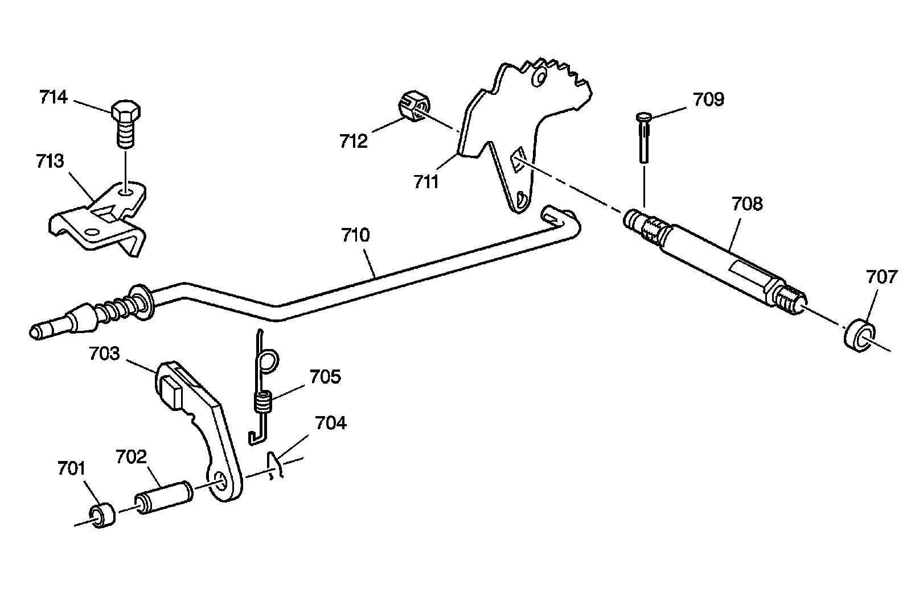

Parking Lock and Actuator Assembly
Disassembled Views
Parking Lock and Actuator Assembly:

701 - Parking Pawl Shaft Hole Plug
702 - Parking Pawl Shaft
703 - Parking Pawl
704 - Parking Pawl Shaft Retainer
705 - Parking Pawl Spring
707 - Manual Shift Shaft Seal
708 - Manual Shift Shaft
708 - Manual Shift Shaft
709 - Manual Shift Shaft Pin
710 - Parking Pawl Actuator Assembly
711 - Manual Shift Shaft Detent Lever Assembly
712 - Manual Shift Shaft Detent Lever Nut
713 - Parking Pawl Actuator Bracket
714 - Parking Pawl Actuator Bracket Bolt